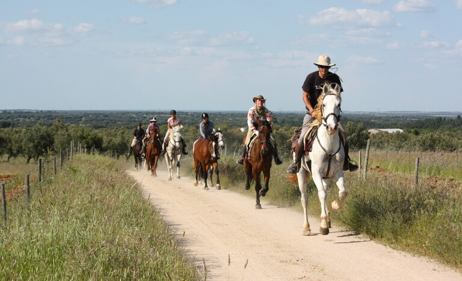

سوارکاری تنها یک ورزش نیست، بلکه تجربهای از ارتباط، اعتماد، آرامش و هماهنگی میان انسان و اسب است. این فعالیت زیبا فرصتی فراهم میکند تا در کنار طبیعت، لحظههایی متفاوت را تجربه کنیم و با دنیای این حیوان نجیب بیشتر آشنا شویم.
سوارکاری از فعالیتهای جذاب و ارزشمند است که پیوندی ویژه میان انسان و اسب ایجاد میکند. این ورزش نیازمند صبر، توجه، مسئولیتپذیری و شناخت رفتار اسب است. حضور در کنار اسب و مراقبت از آن میتواند تجربهای آرامشبخش و آموزنده باشد. سوارکاری همچنین فرصتی برای آشنایی با طبیعت، یادگیری مهارتهای جدید و پرورش احترام به حیوانات فراهم میکند.
سوارکاری به توجه، تمرکز و آگاهی از محیط کمک میکند و تجربهای آموزنده به همراه دارد.
آشنایی با اسبها باعث درک بهتر احساسات، رفتار و نیازهای حیوانات میشود.
مراقبت از اسب، اهمیت مهربانی، نظم، صبوری و مسئولیت در برابر حیوانات را یادآوری میکند.
سوارکاری دنیای متنوعی دارد و هر بخش زیباییهای خاص خودش را به نمایش میگذارد.